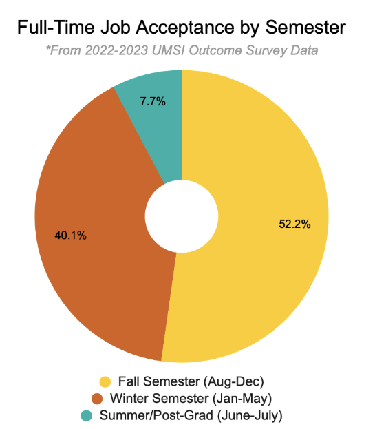
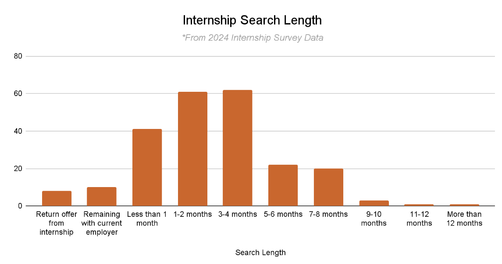

Recruiting Timeline
The following charts show job and internship acceptance timelines for UMSI students, representing peak periods for top UMSI industries by semester. Recruiting activity is not limited to these timelines or industries. Students secure opportunities year-round. This resource aims to provide students with a general sense of recruiting timelines to help with job and internship search planning throughout the year.
3 The following chart shows the internship search length from 2024 Internship survey data. The majority of students secured their internship within 1-4 months of starting their search.
Prep for Fall Recruitment
Steps for Preparation
- What to expect for fall recruiting Start with a format that works—no need to design from scratch.
- Gather Your Experiences: List jobs, internships, volunteer roles, coursework, and projects most relevant to your goals.
- Write Impactful Bullets: Use action verbs and highlight your skills, results, and unique contributions.
- Tailor for Each Opportunity: Customize your resume for every job or internship you pursue.
- Review and Edit: Proofread for errors, check formatting, and ask for feedback from peers or a career coach.
Fall Career Fairs @ U-M
- UCC Consulting & Finance Career Fair (In-Person) Sep 4th/11am-3am ET
- UCC Fall Job & Internship Fair: Multi-Day Event!
- Day 1 (In-Person) Sep 23&24 and Oct 1/ 11am-3pm ET/ Michigan Union
- Day 2 (Virtual) Oct 25th/12pm-4pm ET
- Fall Engineering Career Fair (In-Person) September 9 & September 10 / 10 AM-4 PM ET
Upcoming UNSI Career Jams
- Resume Refresh Workshop: Sep 10th/12pm-1pm ET
- LinkedIn Profile Workshop: Sep 17th/12pm-1pm ET
Registration for events is open in CareerLink (login required).'